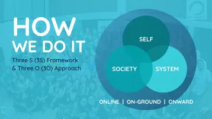

About Us
We’re #MentalHealthPH!
We champion and build mentally healthier communities around the Philippines.
Since 2016, we’ve been investing into increasing awareness about people’s struggles with mental ill-health, empowering members to support themselves and others, and collaborating with various sectors towards sustainable solutions.
Our Story
What started as a social media campaign in 2016 that humbly sought to share inspiring stories has grown into a nationwide movement—with volunteers running our headquarters in Metro-Manila’s Quezon City to our chapters in Iloilo City, Cebu City, and the Bicol Region. We serve a growing community with over 43,000 members from all over the Philippines—people who share our belief that the experiences Filipinos go through as a result of their mental health are very real and matter enough to be shared, discussed, and holistically addressed throughout the country.
How We Work
Our mental health deserves more than band-aid fixes and feel-good results, so our advocacy is guided by our Three S Framework and Three O Approach. We believe that for us to achieve a mentally healthy community, change must be done in the level of Self, Society, and System. We do this by maximizing social media and Online digital technology, On-Ground activities, and Onward collaborations.
Three S Framework
The Three S (3S) Framework helps us stay mindful of which levels we will be creating an impact for. These stand for Self, Society, and System.
SELF
We care about people on the individual level and want to empower them to support themselves and/or other people if they so choose. Each person plays an important role in the fight for our mental health so we encourage this help-seeking behavior by sharing information about mental health, publishing stories that inspire hope, providing access to caring communities that are judgment-free, and hosting events that foster understanding, recovery, and growth.
SOCIETY
We care about people on the societal level and want to cultivate a culture that cares for and contributes to the greater collective good. We do this by bridging eager volunteers with strategic opportunities where they can develop their skills, invest their time and talents, and champion our mental health on our platforms. From forging partnerships and launching information campaigns, the resulting teamwork plays a major role in improving people’s access to reliable resources and support which further reduces the stigma around mental health.
SYSTEM
We care about people on the systems level and want to ensure that the structures and relationships influencing our lives seek to support rather than undermine our mental health. We do this by getting involved in both the public and private sector—by promoting and contributing to the goals of the Philippine Mental Health Act as well as encouraging workplaces to adopt mentally healthier practices, policies, and principles—so that the conditions we live in are conducive for mentally healthier living.
Three O Approach
The Three O (3Os) Approach helps us utilize the most appropriate platforms for the outcomes we hope to achieve. These stand for Online, On-Ground, and Onward.
ONLINE
We use online tools like social media networks, livestreams, and our own website’s platform to share valuable resources. The internet’s speed, accessibility, and self-paced nature of the internet allows us to reach Filipinos who would otherwise be excluded by the time-based, limited, and expensive nature of offline events.
ON-GROUND
We work on ground by hosting and facilitating workshops, talks, and seminars to provide more personal and palpable support for our communities. In addition to complementing our online initiatives, these allow us to remain inclusive by seeing to the needs of people for whom internet connections aren’t as available.
ONWARD
We aim for impact that extends onward so we design our campaigns and seek out partnerships that not only improve our results but help run them sustainably too. Teaming up with like minded peers and organizations means that the good we do now continue to serve the people we care about, long after the instances of our campaigns have ended.
Our Campaigns
The core of #MentalHealthPH lies in giving faces and voices to those experiencing mental health concerns—from struggling with the reality of mental ill health, the stigma of needing and seeking help, as well as supporting the people they love.
Online
Inspiring stories, Twitter discussions, and videos
On Ground
Live events at workplaces, schools, and physical spaces
Onward
Partnerships, networking, and collaboration